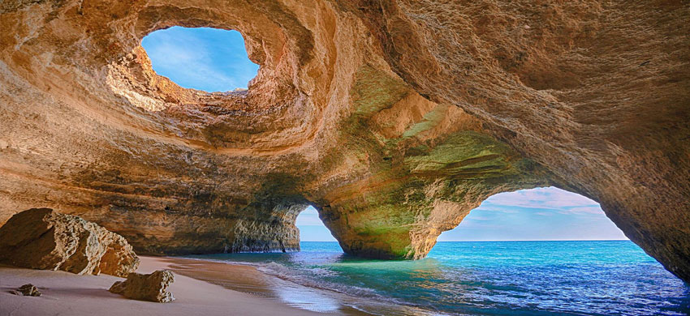

Algarve
| O Algarve, região no extremo sul de Portugal, é conhecida pelas praias do Mediterrâneo e pelos resorts de golfe. Vilas de pescadores caiadas em despenhadeiros baixos com vista para enseadas de areia foram transformadas na década de 1960, e agora a costa central entre Lagos e Faro é repleta de mansões, hotéis, bares e restaurantes. A costa atlântica ocidental da região e o interior de relevo acidentado são menos desenvolvidos. |  |